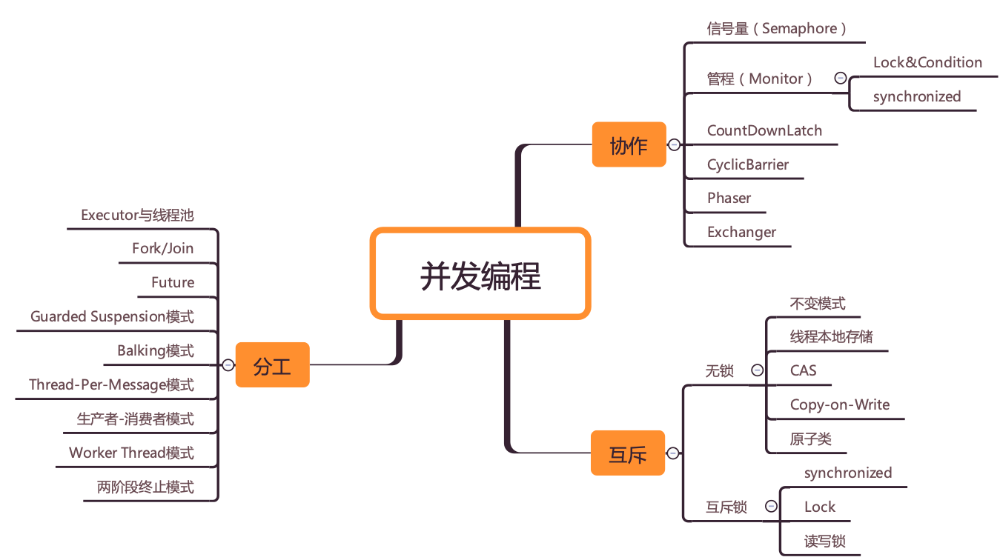

- 00 学习攻略 如何才能学好并发编程？.md.html
- 00 开篇词 你为什么需要学习并发编程？.md.html
- 01 可见性、原子性和有序性问题：并发编程Bug的源头.md.html
- 02 Java内存模型：看Java如何解决可见性和有序性问题.md.html
- 03 互斥锁（上）：解决原子性问题.md.html
- 04 互斥锁（下）：如何用一把锁保护多个资源？.md.html
- 05 一不小心就死锁了，怎么办？.md.html
- 06 用“等待-通知”机制优化循环等待.md.html
- 07 安全性、活跃性以及性能问题.md.html
- 08 管程：并发编程的万能钥匙.md.html
- 09 Java线程（上）：Java线程的生命周期.md.html
- 10 Java线程（中）：创建多少线程才是合适的？.md.html
- 11 Java线程（下）：为什么局部变量是线程安全的？.md.html
- 12 如何用面向对象思想写好并发程序？.md.html
- 13 理论基础模块热点问题答疑.md.html
- 14 Lock和Condition（上）：隐藏在并发包中的管程.md.html
- 15 Lock和Condition（下）：Dubbo如何用管程实现异步转同步？.md.html
- 16 Semaphore：如何快速实现一个限流器？.md.html
- 17 ReadWriteLock：如何快速实现一个完备的缓存？.md.html
- 18 StampedLock：有没有比读写锁更快的锁？.md.html
- 19 CountDownLatch和CyclicBarrier：如何让多线程步调一致？.md.html
- 20 并发容器：都有哪些“坑”需要我们填？.md.html
- 21 原子类：无锁工具类的典范.md.html
- 22 Executor与线程池：如何创建正确的线程池？.md.html
- 23 Future：如何用多线程实现最优的“烧水泡茶”程序？.md.html
- 24 CompletableFuture：异步编程没那么难.md.html
- 25 CompletionService：如何批量执行异步任务？.md.html
- 26 Fork_Join：单机版的MapReduce.md.html
- 27 并发工具类模块热点问题答疑.md.html
- 28 Immutability模式：如何利用不变性解决并发问题？.md.html
- 29 Copy-on-Write模式：不是延时策略的COW.md.html
- 3 个用户来信 打开一个新的并发世界.md.html
- 30 线程本地存储模式：没有共享，就没有伤害.md.html
- 31 Guarded Suspension模式：等待唤醒机制的规范实现.md.html
- 32 Balking模式：再谈线程安全的单例模式.md.html
- 33 Thread-Per-Message模式：最简单实用的分工方法.md.html
- 34 Worker Thread模式：如何避免重复创建线程？.md.html
- 35 两阶段终止模式：如何优雅地终止线程？.md.html
- 36 生产者-消费者模式：用流水线思想提高效率.md.html
- 37 设计模式模块热点问题答疑.md.html
- 38 案例分析（一）：高性能限流器Guava RateLimiter.md.html
- 39 案例分析（二）：高性能网络应用框架Netty.md.html
- 40 案例分析（三）：高性能队列Disruptor.md.html
- 41 案例分析（四）：高性能数据库连接池HiKariCP.md.html
- 42 Actor模型：面向对象原生的并发模型.md.html
- 43 软件事务内存：借鉴数据库的并发经验.md.html
- 44 协程：更轻量级的线程.md.html
- 45 CSP模型：Golang的主力队员.md.html
- 用户来信 真好，面试考到这些并发编程，我都答对了！.md.html
- 结束语 十年之后，初心依旧.md.html
- 捐赠
00 学习攻略 如何才能学好并发编程？
并发编程并不是一门相对独立的学科，而是一个综合学科。并发编程相关的概念和技术看上非常零散，相关度也很低，总给你一种这样的感觉：我已经学习很多相关技术了，可还是搞不定并发编程。那如何才能学习好并发编程呢？
其实很简单，只要你能从两个方面突破一下就可以了。一个是“跳出来，看全景”，另一个是“钻进去，看本质”。
跳出来，看全景
我们先说“跳出来”。你应该也知道，学习最忌讳的就是“盲人摸象”，只看到局部，而没有看到全局。所以，你需要从一个个单一的知识和技术中“跳出来”，高屋建瓴地看并发编程。当然，这首要之事就是你建立起一张全景图。
不过，并发编程相关的知识和技术还真是错综复杂，时至今日也还没有一张普遍认可的全景图，也许这正是很多人在并发编程方面难以突破的原因吧。好在经过多年摸爬滚打，我自己已经“勾勒”出了一张全景图，不一定科学，但是在某种程度上我想它还是可以指导你学好并发编程的。
在我看来，并发编程领域可以抽象成三个核心问题：分工、同步和互斥。
1. 分工
所谓分工，类似于现实中一个组织完成一个项目，项目经理要拆分任务，安排合适的成员去完成。
在并发编程领域，你就是项目经理，线程就是项目组成员。任务分解和分工对于项目成败非常关键，不过在并发领域里，分工更重要，它直接决定了并发程序的性能。在现实世界里，分工是很复杂的，著名数学家华罗庚曾用“烧水泡茶”的例子通俗地讲解了统筹方法（一种安排工作进程的数学方法），“烧水泡茶”这么简单的事情都这么多说道，更何况是并发编程里的工程问题呢。
既然分工很重要又很复杂，那一定有前辈努力尝试解决过，并且也一定有成果。的确，在并发编程领域这方面的成果还是很丰硕的。Java SDK并发包里的Executor、Fork/Join、Future本质上都是一种分工方法。除此之外，并发编程领域还总结了一些设计模式，基本上都是和分工方法相关的，例如生产者-消费者、Thread-Per-Message、Worker Thread模式等都是用来指导你如何分工的。
学习这部分内容，最佳的方式就是和现实世界做对比。例如生产者-消费者模式，可以类比一下餐馆里的大厨和服务员，大厨就是生产者，负责做菜，做完放到出菜口，而服务员就是消费者，把做好的菜给你端过来。不过，我们经常会发现，出菜口有时候一下子出了好几个菜，服务员是可以把这一批菜同时端给你的。其实这就是生产者-消费者模式的一个优点，生产者一个一个地生产数据，而消费者可以批处理，这样就提高了性能。
2. 同步
分好工之后，就是具体执行了。在项目执行过程中，任务之间是有依赖的，一个任务结束后，依赖它的后续任务就可以开工了，后续工作怎么知道可以开工了呢？这个就是靠沟通协作了，这是一项很重要的工作。
在并发编程领域里的同步，主要指的就是线程间的协作，本质上和现实生活中的协作没区别，不过是一个线程执行完了一个任务，如何通知执行后续任务的线程开工而已。
协作一般是和分工相关的。Java SDK并发包里的Executor、Fork/Join、Future本质上都是分工方法，但同时也能解决线程协作的问题。例如，用Future可以发起一个异步调用，当主线程通过get()方法取结果时，主线程就会等待，当异步执行的结果返回时，get()方法就自动返回了。主线程和异步线程之间的协作，Future工具类已经帮我们解决了。除此之外，Java SDK里提供的CountDownLatch、CyclicBarrier、Phaser、Exchanger也都是用来解决线程协作问题的。
不过还有很多场景，是需要你自己来处理线程之间的协作的。
工作中遇到的线程协作问题，基本上都可以描述为这样的一个问题：当某个条件不满足时，线程需要等待，当某个条件满足时，线程需要被唤醒执行。例如，在生产者-消费者模型里，也有类似的描述，“当队列满时，生产者线程等待，当队列不满时，生产者线程需要被唤醒执行；当队列空时，消费者线程等待，当队列不空时，消费者线程需要被唤醒执行。”
在Java并发编程领域，解决协作问题的核心技术是管程，上面提到的所有线程协作技术底层都是利用管程解决的。管程是一种解决并发问题的通用模型，除了能解决线程协作问题，还能解决下面我们将要介绍的互斥问题。可以这么说，管程是解决并发问题的万能钥匙。
所以说，这部分内容的学习，关键是理解管程模型，学好它就可以解决所有问题。其次是了解Java SDK并发包提供的几个线程协作的工具类的应用场景，用好它们可以妥妥地提高你的工作效率。
3. 互斥
分工、同步主要强调的是性能，但并发程序里还有一部分是关于正确性的，用专业术语叫“线程安全”。并发程序里，当多个线程同时访问同一个共享变量的时候，结果是不确定的。不确定，则意味着可能正确，也可能错误，事先是不知道的。而导致不确定的主要源头是可见性问题、有序性问题和原子性问题，为了解决这三个问题，Java语言引入了内存模型，内存模型提供了一系列的规则，利用这些规则，我们可以避免可见性问题、有序性问题，但是还不足以完全解决线程安全问题。解决线程安全问题的核心方案还是互斥。
所谓互斥，指的是同一时刻，只允许一个线程访问共享变量。
实现互斥的核心技术就是锁，Java语言里synchronized、SDK里的各种Lock都能解决互斥问题。虽说锁解决了安全性问题，但同时也带来了性能问题，那如何保证安全性的同时又尽量提高性能呢？可以分场景优化，Java SDK里提供的ReadWriteLock、StampedLock就可以优化读多写少场景下锁的性能。还可以使用无锁的数据结构，例如Java SDK里提供的原子类都是基于无锁技术实现的。
除此之外，还有一些其他的方案，原理是不共享变量或者变量只允许读。这方面，Java提供了Thread Local和final关键字，还有一种Copy-on-write的模式。
使用锁除了要注意性能问题外，还需要注意死锁问题。
这部分内容比较复杂，往往还是跨领域的，例如要理解可见性，就需要了解一些CPU和缓存的知识；要理解原子性，就需要理解一些操作系统的知识；很多无锁算法的实现往往也需要理解CPU缓存。这部分内容的学习，需要博览群书，在大脑里建立起CPU、内存、I/O执行的模拟器。这样遇到问题就能得心应手了。
跳出来，看全景，可以让你的知识成体系，所学知识也融汇贯通起来，由点成线，由线及面，画出自己的知识全景图。

并发编程全景图之思维导图
钻进去，看本质
但是光跳出来还不够，还需要下一步，就是在某个问题上钻进去，深入理解，找到本质。
就拿我个人来说，我已经烦透了去讲述或被讲述一堆概念和结论，而不分析这些概念和结论是怎么来的，以及它们是用来解决什么问题的。在大学里，这样的教材很流行，直接导致了芸芸学子成绩很高，但解决问题的能力很差。其实，知其然知其所以然，才算真的学明白了。
我属于理论派，我认为工程上的解决方案，一定要有理论做基础。所以在学习并发编程的过程中，我都会探索它背后的理论是什么。比如，当看到Java SDK里面的条件变量Condition的时候，我会下意识地问，“它是从哪儿来的？是Java的特有概念，还是一个通用的编程概念？”当我知道它来自管程的时候，我又会问，“管程被提出的背景和解决的问题是什么？”这样一路探索下来，我发现Java语言里的并发技术基本都是有理论基础的，并且这些理论在其他编程语言里也有类似的实现。所以我认为，技术的本质是背后的理论模型。
总结
当初我学习Java并发编程的时候，试图上来就看Java SDK的并发包，但是很快就放弃了。原因是我觉得东西太多，眼花缭乱的，虽然借助网络上的技术文章，感觉都看懂了，但是很快就又忘了。实际应用的时候大脑也一片空白，根本不知道从哪里下手，有时候好不容易解决了个问题，也不知道这个方案是不是合适的。
我知道根本原因是，我的并发知识还没有成体系。
我想，要让自己的知识成体系，一定要挖掘Java SDK并发包背后的设计理念。Java SDK并发包是并发大师Doug Lea设计的，他一定不是随意设计的，一定是深思熟虑的，其背后是Doug Lea对并发问题的深刻认识。可惜这个设计的思想目前并没有相关的论文，所以只能自己琢磨了。
分工、同步和互斥的全景图，是我对并发问题的个人总结，不一定正确，但是可以帮助我快速建立解决并发问题的思路，梳理并发编程的知识，加深认识。我将其分享给你，希望对你也有用。
对于某个具体的技术，我建议你探索它背后的理论本质，理论的应用面更宽，一项优秀的理论往往在多个语言中都有体现，在多个不同领域都有应用。所以探求理论本质，既能加深对技术本身的理解，也能拓展知识深度和广度，这是个一举多得的方法。这方面，希望我们一起探讨，共同进步。
欢迎在留言区跟我分享你的经历与想法。感谢阅读，如果你觉得这篇文章对你有帮助的话，也欢迎把它分享给更多的朋友。
© 2019 - 2023 Liangliang Lee. Powered by gin and hexo-theme-book.